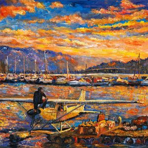

About
I am a PhD student in mathematics at UBC Okanagan, advised by Warren Hare and Amir Ardestani-Jaafari. I hold an MSc in mathematics and a BSc in physics and mathematics, both from UBC Okanagan.
I study optimization problems in which each function evaluation is expensive, such as a simulation of a scanner design or a gradient computed over a large dataset. Cheaper approximations of these problems are often available, but the work spent on them must be justified by the saving on the original problem. I develop derivative-free and multi-fidelity methods that decide how to use such approximations, analyze their convergence, and apply them to engineering design and epidemiological modelling.
News
- Invited talk at the Third Derivative-Free Optimization Symposium (DFOS 2026), Université de Montréal.
- Published in Engineering Optimization: A multiobjective multifidelity optimization approach for the design of scanners for use in optical computed tomography imaging.
- Talk at the West Coast Optimization Meeting (WCOM Fall 2025), UBC Okanagan.
- Talk at the CORS 2025 Annual Conference, Edmonton.
Papers
Preprints and submitted
-
Cost-aware iteration allocation for sequential multi-fidelity first-order optimization.
A. Ardestani-Jaafari, W. Hare, Z. Huang.
code
Journal articles
-
A multiobjective multifidelity optimization approach for the design of scanners for use in optical computed tomography imaging.
Z. Huang, J. Ryga, A. Ogilvy, A. Ardestani-Jaafari, A. Jirasek, W. Hare.
doi -
Preliminary commissioning of a prototype solid tank optical CT scanner for 3D radiation dosimetry.
A. Ogilvy, S. Collins, M. Guenter, D. Huang, W. Hare, M. Hilts, A. Jirasek.
doi -
Iterative image reconstruction with polar coordinate discretized system matrix for optical CT radiochromic gel dosimetry.
S. Collins, A. Ogilvy, D. Huang, W. Hare, M. Hilts, A. Jirasek.
doi -
A Hybrid Direct Search and Model-Based Derivative-Free Optimization Method with Dynamic Decision Processing and Application in Solid-Tank Design.
Z. Huang, A. Ogilvy, S. Collins, W. Hare, M. Hilts, A. Jirasek.
doi -
The superconducting transition and mixed state of YBa2Cu3O6.95: an undergraduate experiment.
Z. Huang, Y. Tong, J. S. Bobowski.
doi
Teaching
I have taught mathematics for seven years, including complete courses at UBC Okanagan and Okanagan College. In lectures I explain the reasoning behind each method before students practise it. I write assignments at three levels, foundational, application and extension, so that students with different preparation can all make progress.
Courses taught
- UBC Okanagan, sessional lecturer, 2022–2024
MATH 100 Differential Calculus (3 sections); MATH 200 Calculus III. - Okanagan College, college professor (term), 2023–2024
MATH 114 Business Mathematics; MATH 120 Pre-Calculus; labs for MATH 112 Calculus I, MATH 122 Calculus II and STAT 124 Business Statistics.
Teaching assistant
- MATH 200 Calculus III labs, UBC Okanagan, 2024–present.
- First-year physics labs (PHYS 111, 112, 121), UBC Okanagan, 2019–2022 and Fall 2025.
Talks
- Invited: Derivative-Free Optimization Symposium (DFOS), 2026; BIRS workshop on derivative-free optimization, 2022; CAIMS Annual Meeting, 2022.
- Contributed: CORS Annual Conference, 2025; West Coast Optimization Meeting, 2025.
Awards
- UBC Okanagan Graduate Research Scholarship, 2025.
- University Graduate Fellowship, 2021 and 2022.
- Special UBC Okanagan Graduate Award, 2021.
- Graduate Dean's Entrance Scholarship, 2020.
Outside research

I also paint, mostly landscapes of the Okanagan in acrylic. My paintings are shown at Vincent's Light Fine Art Studio.